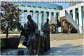
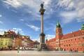
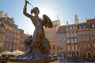

Multimédia
Fotografias
  
Vídeo
Poema
Varsóvia, Alma de Resistência
Nas margens do Vístula, ela se ergue,Varsóvia,
de feridas e flores,
Cenário de guerras,
cicatrizes, Mas também de sonhos e amores.
As pedras contam histórias antigas,
De um povo que nunca cedeu,
Erguida dos escombros, renascida,
Com o coração que nunca morreu.
Suas ruas ainda ecoam lamentos,
De tempos de luta e opressão,
Mas também brilham em novos momentos,
De vida, cultura e renovação.
O céu sobre Varsóvia, azul profundo,
Guarda segredos que o tempo guardou,
E o vento sussurra, manso e fecundo,
De uma cidade que nunca tombou.
Do gueto ao levante, sua essência,
De quem a liberdade perseguiu,
Varsóvia, símbolo de resistência,
Onde o passado e o futuro se uniu.